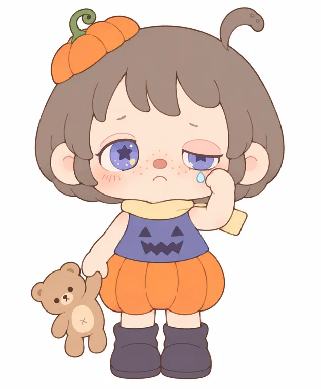

02把登记、首售回顾与停产分开
三种日期不能拼成没有缺口的一条诞生史。
| 时间 | 可以确认的节点 | 证据性质／边界 |
|---|
| 2023-01-10 | 独处时光周边的现行Release Time。 [A02] | 缺同期佐证，早于目前取得的记忆碎片资料；不认作诞生日或已确定首品 |
| 2023年12月 | 早2024采访回顾广州正佳TOP TOY联名店LED展示ANMOO等形象。 [A11] | 公开出现的回顾证据，不是独立销量 |
| 2023-12-30／2024年1月 | 记忆碎片官网登记2023-12-30；角色运营账号回顾2024年1月，商家图鉴标1月13日。 [A03] [X02] [X06] | 登记、运营回顾与商家整理并列；全球首售仍未知 |
| 至2024-03-18 | 赢商网报道广州/成都TOP TOY线下独家发售记忆碎片。 [A10] | 渠道发售可核，报道未给具体举办日 |
| 2024-07-29 | LITTLE ANMOO公告称记忆碎片停产、直营售罄，并预告新系列。 [X06] | 账号自述，没有净售出数量；停产不直接证明失败 |
| 2024—2026 | 从不完美的世界、谎言童话、侧耳倾听，到毛绒和一隅间持续上新。 [A04] [A05] [A06] [A08] [A09] | 系列延续可核，增长与爆款地位未知 |
图鉴交叉核验
| 系列 | 官网现行登记 | X02商家图鉴 | 当前处理 |
|---|
| 记忆碎片 | 2023-12-30 | 2024-01-13；X06：2024年1月 | 登记/实际上市节点或区域差异未解决；不写精确全球首售。 [A03] [X02] [X06] |
| 不完美的世界 | 2024-08-05 | 2024-08-18 | 并列保留，未核市场/登记口径。 [A04] [X02] |
| 谎言童话 | 2025-03-15 | 2025-03-31 | 并列保留；不能用图鉴日期覆盖官方登记。 [A05] [X02] |
| 独处时光 | 2023-01-10 | — | 早于目前已取得的记忆碎片共创与运营回顾节点，缺同期证据；首品/诞生日未知。 [A02] [A13] [X06] |
产品与渠道先行是当前证据支持的路径归纳。公司2022成立，不等于阿默2022诞生；共创评论的2023-10-29只见搜索索引，未取得评论本体，不用它锁定正式众筹日。[A13] [A14]
05明亮的外壳，也能容纳不开心
消失的魔法V03：七个实际取样点，只代表这一款。
灰棕#9b8675
头发 · 1500,800
浅桃白#dbcec3
额头 · 1580,1240
南瓜橙#b9652b
短裤 · 1400,2200
蓝紫#4a4b82
上衣底色 · 1460,1880
奶油黄#c3ae8d
围巾 · 1500,1700
藤绿#5b8764
帽顶藤 · 990,560
红棕#bc706b
鼻头 · 1580,1460
取样基于3000×3000 RGBA原文件，以左上角为原点，直接读取不透明单像素RGB，未校色；渲染的高光、阴影与反射仍在其中。没有做主体分割，不编面积百分比；单点不代表整个材料色块。
V03橙紫互衬与小小泪脸并置，是单款主题关系。V02奶白蓝紫、V04骨白苔绿、V06黄绿、V07暖棕粉均不同。浅脸、较深眼部和红棕鼻是候选关系，不能提升为官方色彩不变量；闭眼和变眼色是明确例外。
V09/V10旧纸色、V06框内墙面、V07暖灯和织物均属展示环境。尚无官方色手册、材料色卡；灰度、头像缩小、5cm实体、印刷/纤维色差没有实测，HEX不能直接作生产验收色。
07成长的记忆，拆成可以拥有的小场景
官方叙事意图与实际用户感受分别看。
从记忆开始
共创开篇以童年到成年后的自问组织成长主题；下一页出现生日时的局促与向小熊倾诉。它提供情境，不只是一个“治愈”标签。[A13]
以单款承载情绪
闭眼抱膝、穿怪兽服举手、擦泪提熊与缩在骨壳下，给不容易直接说的话一个可见载体。以上为图像与表达的研究映射，未证明用户都这样理解。[A03] [A04] [A05] [A06]
系列之间接力
运营公告以停产告别记忆碎片，并预告新系列；评论可见期待二代、想集齐与端盒的意愿。属于关系延续线索，不是已经核验的复购率。[X06]
角色住处、连续关系网、固定口头禅与动画故事体系没有核得。项目里的第一人称年龄不是自然人作者或角色的年龄档案，不据此编写真实生平。
未对官方账号连续30天采样、统计互动中位数或核验投流。图鉴、故事解析与陈列分享提供不同传播入口，不以最高赞笔记代表日常内容水平。
11先测平面，分开文字与附图的结果
固定V03消失的魔法；两种输入各测两轮。
实测结论：纯文字两轮仍未通过；附图V2在V03可见正面二维转绘范围已接近。短圆罩发型、非对称眼睑与星眼、圆鼻短嘴、主要色块和擦泪提熊关系基本保留；发束、眼内光点、脸部短线、熊轮廓与轻微渐变仍有差异，橙色较原渲染亮。不宣称精确复刻、全IP母版或纯文字复现成功。
 V03 · 官方商品原图
V03 · 官方商品原图
官方出处 ↗ref-v2-zh · 实际生成
二维研究转绘，非官方原图以下为研究者依据作品重建的提示词，不是创作者原词，也不能证明原作由AI创作。中文已实测，英文、背面结构和重复稳定性未测。
已测词／中文／必须附V03原图
仅限此款可见正面的二维转绘，不是全IP标准母版；附图成功不能证明纯文字复现通过。
将参考图1中这一个指定款的可见正面转绘为白底二维造型档案。参考图是唯一的身份依据，保留原款的头身比例、头发与头顶两侧突出物、五官关系、色块、手势及小熊位置，只将3D体积明暗变成清楚的平涂色块和细棕色轮廓线。不是设计新人物，也不生成侧面或背面；无文字、标志、水印、投影和背景。
保留灰棕色圆罩短发与宽钝分束刘海，画面右上同色的短弯钩发簇和顶端两个凹点，左上斜置的橙色半南瓜帽及绿色弯藤。保留原图宽圆脸、外凸圆耳，左眼更开右眼上睑压低的非对称关系；大蓝紫虹膜内保留深紫星形和少量小光点，眼白狭窄，不能画成黑眼、纯星形外轮廓眼或星形眼镜。眉毛极淡，浅桃米白肤色、红棕凸圆小鼻、细淡橘红脸颊短线、短小下弯嘴，不添加牙齿。保留右侧眼下小浅蓝泪滴和擦脸的小手。
原款奶油黄围巾向右侧短伸，蓝紫上衣配深紫南瓜脸图案，橙色鼓圆分瓣短裤、短裸腿、深灰紫圆头短靴全部保持。左下方那只手提浅棕小泰迪熊的手臂，熊头左倾、短腿垂下、小叉肚记号；不要改成怀抱、牵手或让熊站地。保持头部略倾、短身与两脚的原图姿态和相互遮挡。去除皮肤、头发、衣服和熊上的高光、渐变、渲染阴影及细密材质纹，只保留必要的识别形状和色块。全身居中四周留白，仅限这一款可见正面的二维研究转绘，不当作整个角色的标准母版。
再严格锁定原图：头发外形是一整个短圆罩，发束宽钝，少画发丝分隔线，不把头发拉长到下颌下；头发横宽约为南瓜裤横宽的1.5倍。浅粉上眼睑和蓝紫星形虹膜保留原本的左右高低，不加浓黑眼线，嘴鼻保持原图小而短的比例。上衣无袖，肩臂是浅肤色；南瓜裤、靴筒和小熊不要放大或加长。绿色藤仍为原图的短弯卷，保留小帽在头部左上侧的原有斜角。保留原图面部和帽饰的轻微倾斜，不变成正直对称站姿。采用没有渐变的平面色块，只用极少细线说明局部边界。
下载完整原词 ↓查看未通过记录与每次完整原词
text-v1-zh · 未通过
大色块与提熊擦泪成立，但头像明显放大，刘海尖长且侧发分层偏动漫；眼线变粗并带睫毛感，上衣多出袖子，围巾和熊的形状、体块关系改变。仍未锁定原款身份比例。
下载当次完整原词 ↓ref-v1-zh · 未通过
圆罩棕发、双侧头顶物、左右不同眼睑、红鼻下弯嘴与提熊擦泪已接近；发束分割线和围巾轮廓仍可收紧，星眼内部较简化，皮肤保留渐变。继续约束头发/裤身宽度与短体块，不据此发布未经重测的修订词。
下载当次完整原词 ↓
text-v2-zh · 未通过
无袖纠正，颜色与动作大体成立；头发仍偏蓬大、长侧发内卷且额头过高，脸底变尖，眼型更动漫，深色上眼线仍明显，右星形被眼睑遮挡的程度不同。小熊新增浅色肚片、南瓜裤轮廓也改写，纯文字仍未接近指定头脸。
下载当次完整原词 ↓每次输入全文与真实参考依赖均记录；没有伪造数值相似度。未继续生成3D或毛绒，未将未测英文和原创六条衍生词放入正式可用区。